CHAPTER 01
Beyond the Horizon
One little elephant dares to leave everything behind and sail toward an unknown world.
Read Chapter →
One Captain. Endless Adventures.
Beyond the horizon, a new legend awaits.
The First Voyage · 12 Chapters · Complete
One little elephant dares to leave everything behind and sail toward an unknown world.
Read Chapter →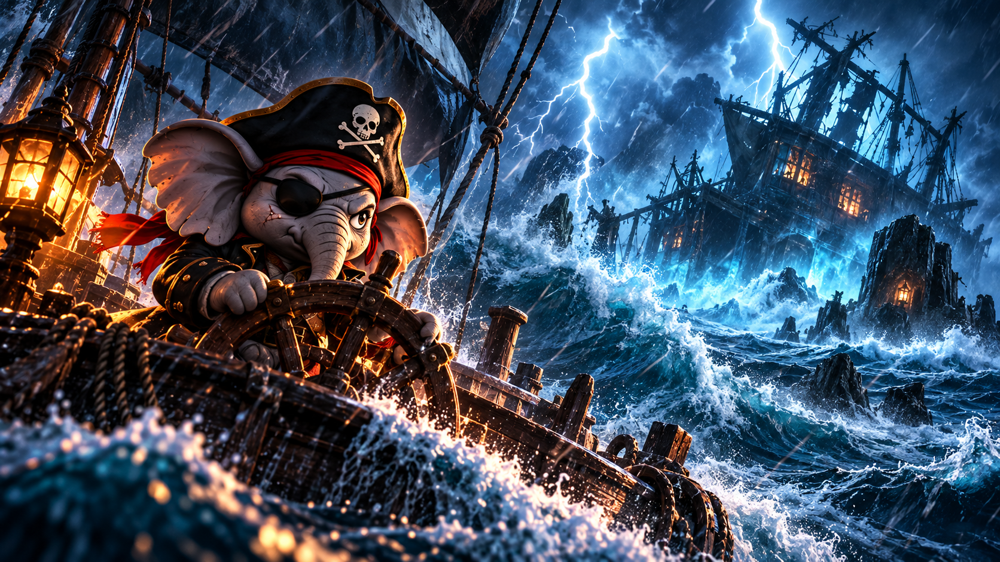
A deadly storm. A mysterious shipwreck. And a stranger carrying the key to a forgotten secret.
Read Chapter →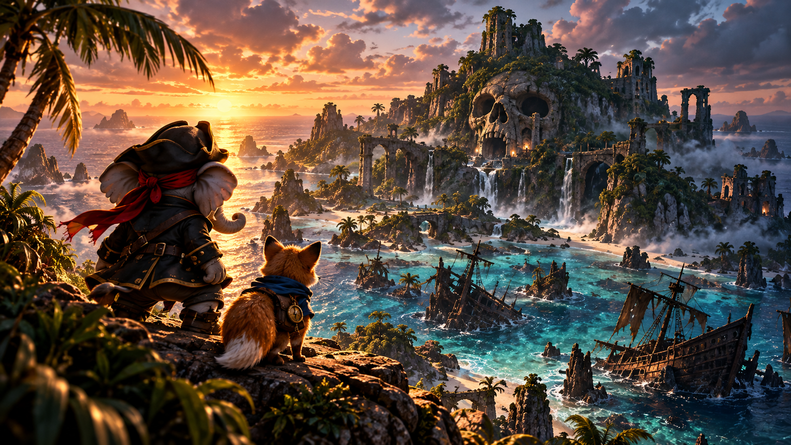
An island of lost ships. A mysterious raven captain. And a terrible choice that reveals what kind of pirate KOKI truly is.
Read Chapter →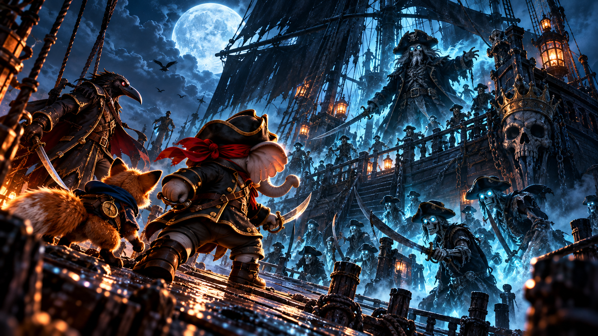
A battle against a cursed crew. A father's hidden message. And a young captain who discovers that even the dead deserve mercy.
Read Chapter →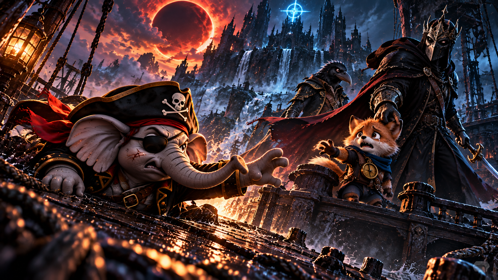
A terrible secret. A broken promise. KOKI loses everything while fighting to protect his first true friend.
Read Chapter →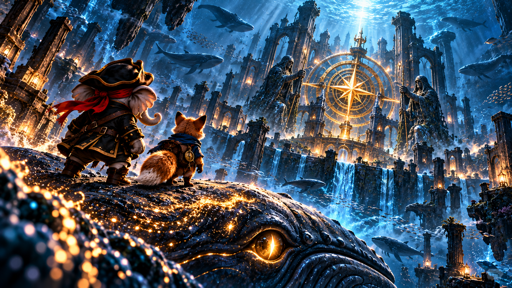
An ancient guardian. A forgotten city beneath the waves. And a golden compass that reveals the true meaning of courage.
Read Chapter →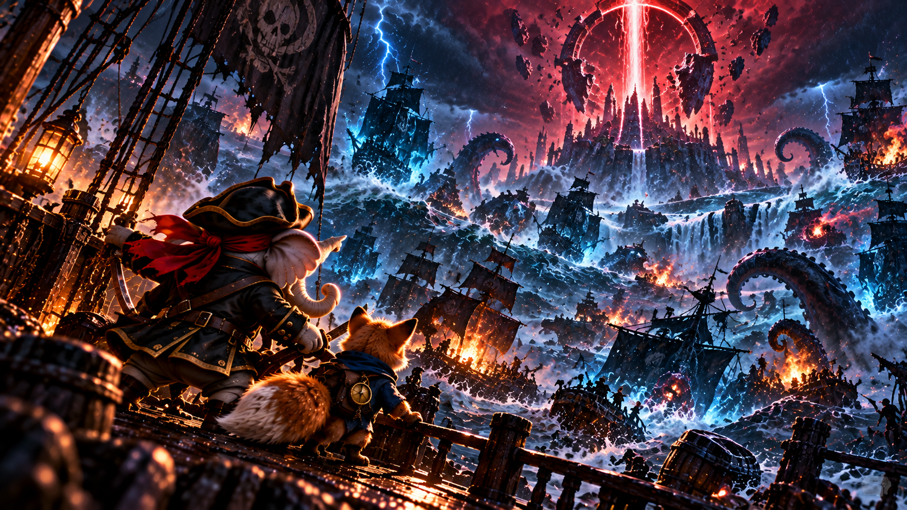
The first seal has fallen. An army rises from the deep. And a young captain must unite the living and the dead.
Read Chapter →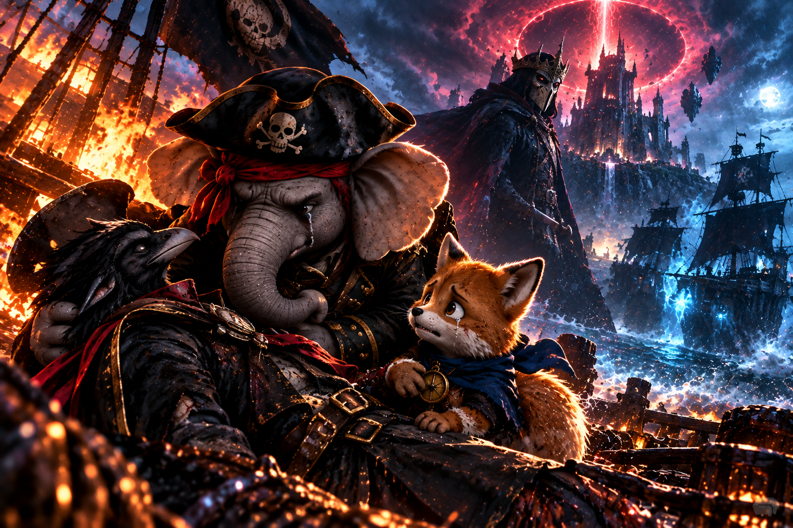
A life-bound curse. A broken promise. KOKI risks his freedom to save the captain who once betrayed him.
Read Chapter →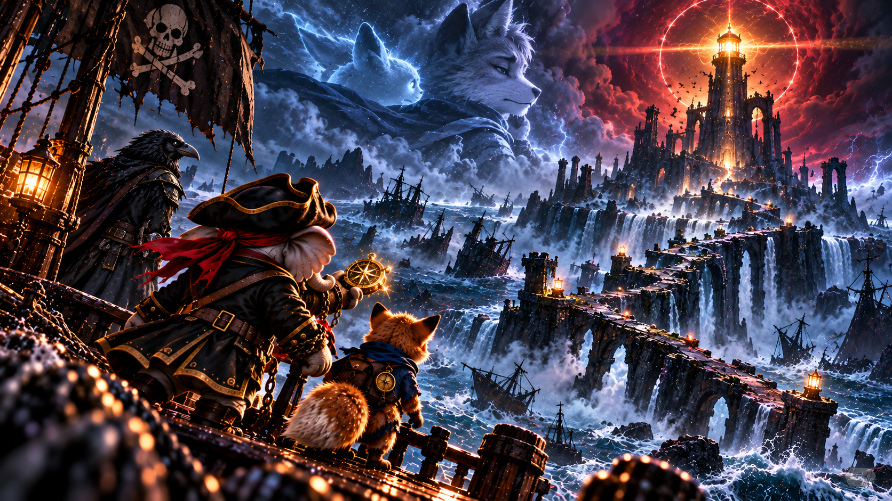
A lighthouse of forgotten memories. A father's message. And a terrible truth about the ancient seals beneath the sea.
Read Chapter →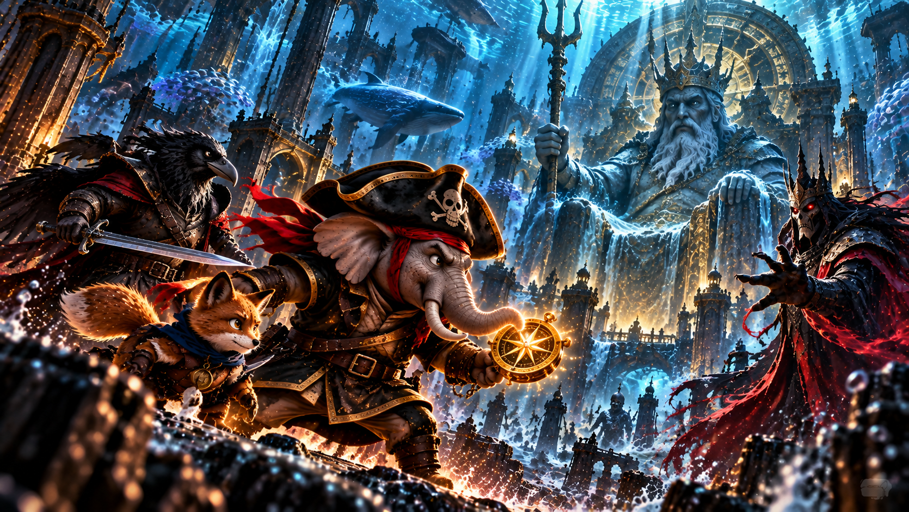
An ancient kingdom beneath the sea. A villain's heartbreaking secret. And a sleeping king who must never awaken.
Read Chapter →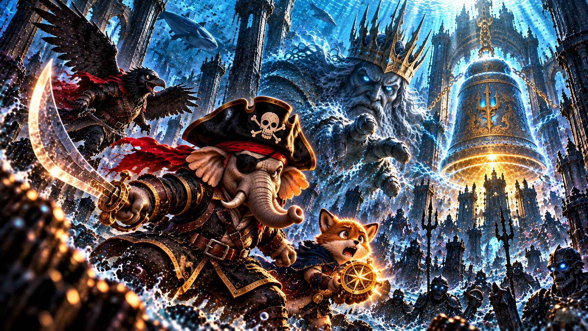
The final battle begins. The Last Compass must be sacrificed. And KOKI faces the greatest choice of his life.
Read Chapter →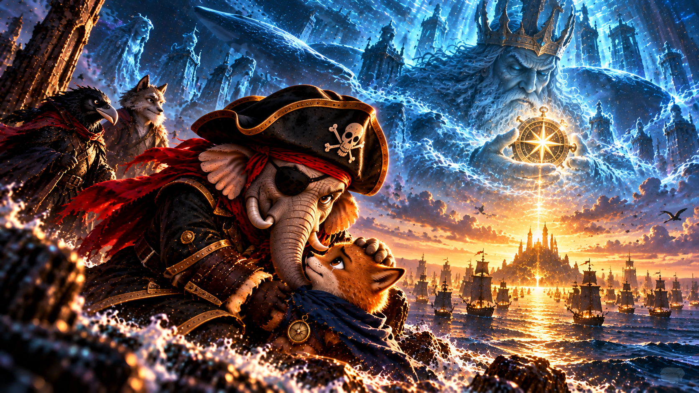
The final promise. A father's return. An ancient king's last choice. And the beginning of a new voyage.
Read Season Finale →The Second Voyage · A New Legend Begins
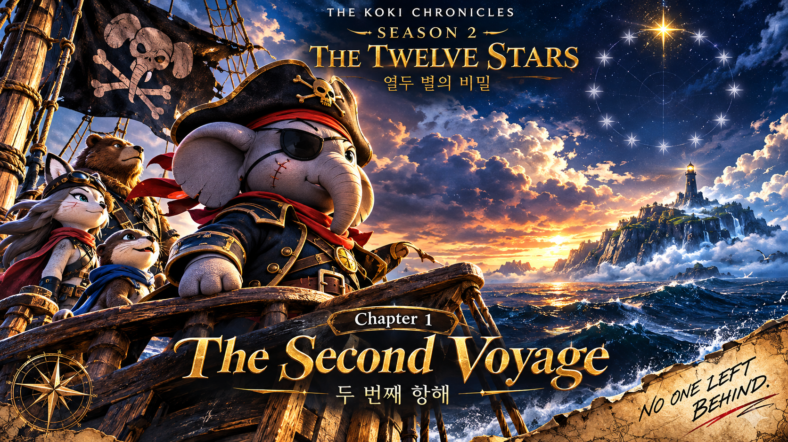
A city beneath the ocean. An awakened golden star. And a captain who refuses to leave anyone behind.
Read Chapter →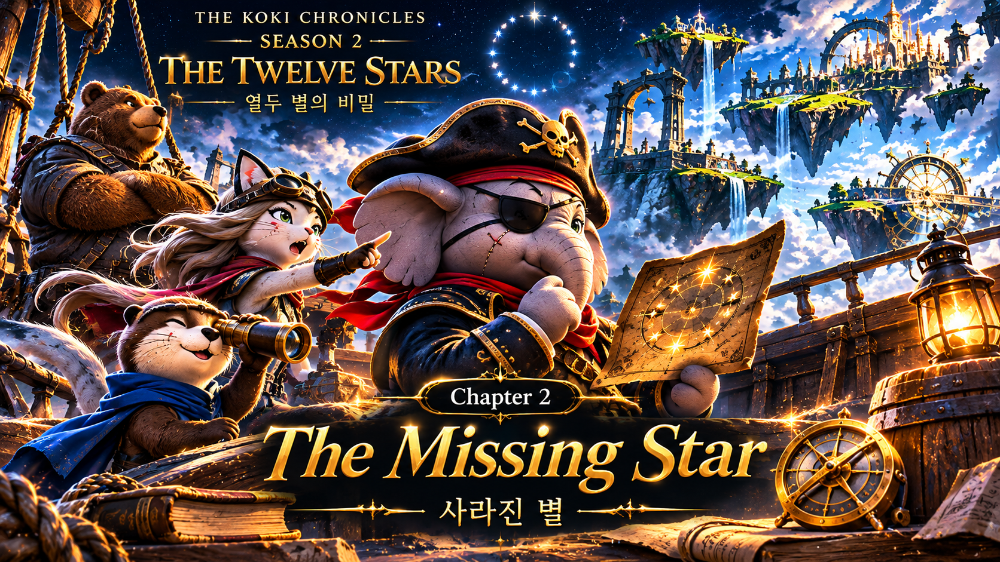
A missing star. A dangerous new mystery. And a captain who must uncover the secrets of an unknown world.
Read Chapter →New islands. Ancient mysteries. Forgotten kingdoms. Follow KOKI into a world beyond imagination.
MORE CHAPTERS AHEADA captain. A promise. A thousand adventures.
The legend of KOKI continues.